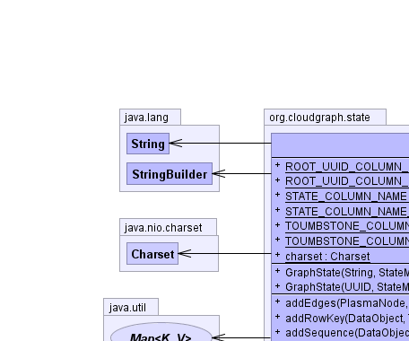
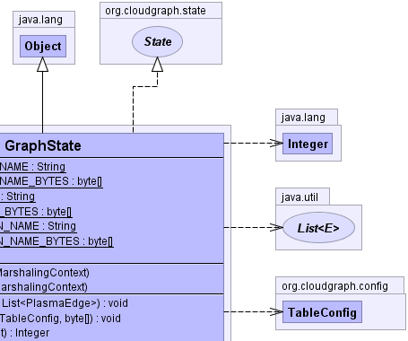
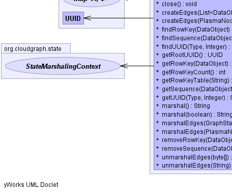
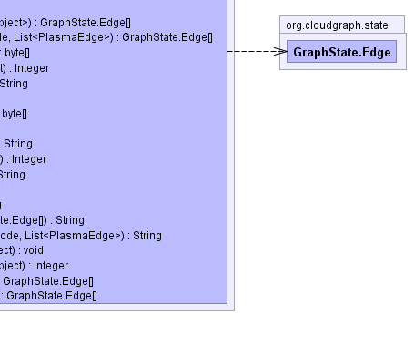

public class GraphState extends java.lang.Object implements State
In general, mappings within the state structure are designed and included for the purpose of consolidation of potentially repetitive data which would otherwise be included within cells as column data or as part of composite column qualifiers.
StateModel,
URI,
TypeEntry,
UUID,
RowKey|  |  |
|  |  |
| Modifier and Type | Class and Description |
|---|---|
class |
GraphState.Edge
Simple immutable structure to contain and
manage the parse result for a single edge.
|
| Modifier and Type | Field and Description |
|---|---|
static java.nio.charset.Charset |
charset |
static java.lang.String |
ROOT_UUID_COLUMN_NAME
Deprecated.
|
static byte[] |
ROOT_UUID_COLUMN_NAME_BYTES
Deprecated.
|
static java.lang.String |
STATE_COLUMN_NAME
The name of the table column containing the mapped row key state
of a graph.
|
static byte[] |
STATE_COLUMN_NAME_BYTES
The name bytes of the table column containing the mapped row key state
of a graph.
|
static java.lang.String |
TOUMBSTONE_COLUMN_NAME
The name of the table column containing the toumbstone
of a graph.
|
static byte[] |
TOUMBSTONE_COLUMN_NAME_BYTES
The name of the table column containing the toumbstone
of a graph.
|
| Constructor and Description |
|---|
GraphState(java.lang.String state,
StateMarshalingContext context) |
GraphState(java.util.UUID rootUUID,
StateMarshalingContext context) |
| Modifier and Type | Method and Description |
|---|---|
void |
addEdges(PlasmaNode dataNode,
java.util.List<PlasmaEdge> edges) |
void |
addRowKey(DataObject dataObject,
TableConfig table,
byte[] key)
Creates a new mapping for the given row key and
data object.
|
java.lang.Integer |
addSequence(DataObject dataObject)
Creates and adds a sequence number mapped to the UUID within the
given data object.
|
void |
close() |
GraphState.Edge[] |
createEdges(java.util.List<DataObject> dataObjects)
Returns edge structures for the given data objects.
|
GraphState.Edge[] |
createEdges(PlasmaNode dataNode,
java.util.List<PlasmaEdge> edges)
Returns edge structures for the given data edges
|
byte[] |
findRowKey(DataObject dataObject)
Returns an existing mapped row key for the given data object,
or null if none exists.
|
java.lang.Integer |
findSequence(DataObject dataObject)
Returns an existing sequence number for the given
data object, or null if none exists.
|
java.lang.String |
findUUID(Type type,
java.lang.Integer sequence)
Returns an existing UUID for the given
sequence number, or null if none exists.
|
java.util.UUID |
getRootUUID() |
byte[] |
getRowKey(DataObject dataObject)
Returns an existing mapped row key for the given data object.
|
int |
getRowKeyCount()
Returns a count of the current row keys
|
java.lang.String |
getRowKeyTable(java.lang.String uuid)
Returns the table name for an existing mapped row key
for the given data object uuid.
|
java.lang.Integer |
getSequence(DataObject dataObject)
Returns an existing sequence number for the given
data object, or null if none exists.
|
java.lang.String |
getUUID(Type type,
java.lang.Integer sequence)
Returns an existing UUID for the given
sequence number, or null if none exists.
|
java.lang.String |
marshal() |
java.lang.String |
marshal(boolean formatted) |
java.lang.String |
marshalEdges(GraphState.Edge[] edges) |
java.lang.String |
marshalEdges(PlasmaNode dataNode,
java.util.List<PlasmaEdge> edges)
Returns a formatted string representation for the graph
edge(s) found linked from the given data object.
|
void |
removeRowKey(DataObject dataObject)
Removes an existing mapping for the given data object.
|
java.lang.Integer |
removeSequence(DataObject dataObject)
Removes the sequence number mapped to the UUID within the
given data object.
|
GraphState.Edge[] |
unmarshalEdges(byte[] data) |
GraphState.Edge[] |
unmarshalEdges(java.lang.String data) |
public static final java.nio.charset.Charset charset
@Deprecated public static final java.lang.String ROOT_UUID_COLUMN_NAME
@Deprecated public static final byte[] ROOT_UUID_COLUMN_NAME_BYTES
public static final java.lang.String STATE_COLUMN_NAME
public static final byte[] STATE_COLUMN_NAME_BYTES
public static final java.lang.String TOUMBSTONE_COLUMN_NAME
public static final byte[] TOUMBSTONE_COLUMN_NAME_BYTES
public GraphState(java.util.UUID rootUUID,
StateMarshalingContext context)
public GraphState(java.lang.String state,
StateMarshalingContext context)
public java.util.UUID getRootUUID()
public void close()
public java.lang.Integer addSequence(DataObject dataObject)
java.lang.IllegalArgumentException - if the data object is already mappeddataObject - the data objectpublic java.lang.Integer removeSequence(DataObject dataObject)
dataObject - the data objectpublic java.lang.Integer findSequence(DataObject dataObject)
public java.lang.Integer getSequence(DataObject dataObject)
java.lang.IllegalArgumentException - if the given data object UUID is not
already mappedpublic java.lang.String findUUID(Type type,
java.lang.Integer sequence)
public java.lang.String getUUID(Type type,
java.lang.Integer sequence)
java.lang.IllegalArgumentException - if the given sequence is not
already mappedtype - the SDO typesequence - the sequence numberpublic byte[] findRowKey(DataObject dataObject)
dataObject - the data objectpublic java.lang.String getRowKeyTable(java.lang.String uuid)
java.lang.IllegalArgumentException - if no row key is mapped for the given data object uuiduuid - the data object uuidpublic byte[] getRowKey(DataObject dataObject)
java.lang.IllegalArgumentException - if no row key is mapped for the given data objectdataObject - the data objectpublic void addRowKey(DataObject dataObject,
TableConfig table,
byte[] key)
dataObject - the data objectkey - the row key;public void removeRowKey(DataObject dataObject)
java.lang.IllegalArgumentException - if no row key is mapped for the UUID associated with the given
data object.dataObject - the data objectkey - the row keypublic int getRowKeyCount()
public void addEdges(PlasmaNode dataNode,
java.util.List<PlasmaEdge> edges)
public java.lang.String marshalEdges(PlasmaNode dataNode,
java.util.List<PlasmaEdge> edges)
dataNode - the source data nodeedges - the edgespublic java.lang.String marshalEdges(GraphState.Edge[] edges)
public GraphState.Edge[] unmarshalEdges(byte[] data)
public GraphState.Edge[] unmarshalEdges(java.lang.String data)
public GraphState.Edge[] createEdges(PlasmaNode dataNode, java.util.List<PlasmaEdge> edges)
dataNode - the source data nodeedges - the edgespublic GraphState.Edge[] createEdges(java.util.List<DataObject> dataObjects)
edges - the edgespublic java.lang.String marshal()
public java.lang.String marshal(boolean formatted)
CloudGraph® is a registered trademark of TerraMeta Software, Inc. Copyright © 2014 - All Rights Reserved.